店長新版上線說明
上線日：2026 年 12 月 8 日（星期一）
更新提醒：12 月 7 日（日）晚上系統會進行更新，請在當天營業結束前存好資料。
為了讓大家在同一個地方就能找到所有功能，也能同時開好幾頁來回切換，我們把系統換成新版。常用的功能都還在，只是入口和幾個小地方不一樣。
新版怎麼進去
- 用平常的方式登入，登入後會先看到「歡迎回來」總覽。
- 按左上角的「選單」按鈕，所有功能都在裡面。
- 點選單裡的功能，就會在新版的分頁打開。可以一次開好幾頁，點上方頁籤就能來回切換。
你最常用的頁面
1登入後首頁
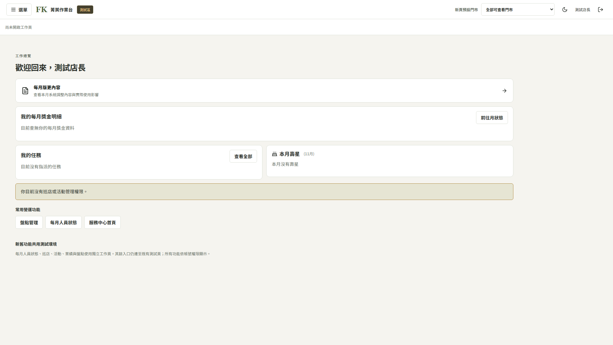
登入後先看到「歡迎回來」總覽，上面有每月版更內容、我的獎金、我的任務和常用功能捷徑。所有功能都從左上角「選單」按鈕展開。
跟舊版不同：舊版是直接從各功能入口進去；新版統一從「選單」找功能。
2我的任務
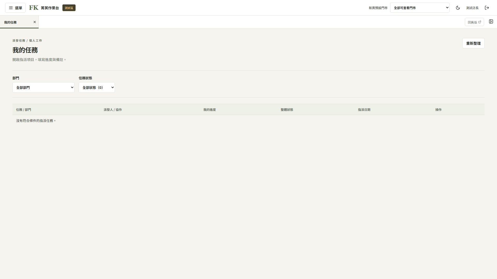
從選單的「派發任務」打開，會在新版的分頁裡開啟。你可以同時開著好幾頁，來回切換不用重開。
跟舊版不同：每一頁右上角都多了「回舊版」。
3儀表板
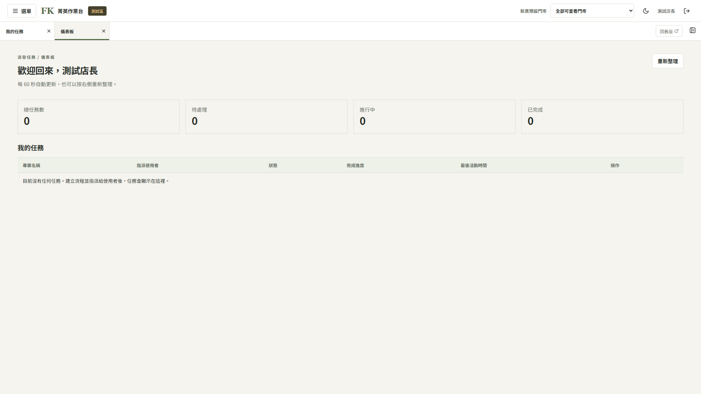
同樣放在選單的「派發任務」底下，可以一眼看到目前任務的狀況。
跟舊版不同：內容每 60 秒自動更新，也可以按右上角「重新整理」馬上更新。
4年度行事曆
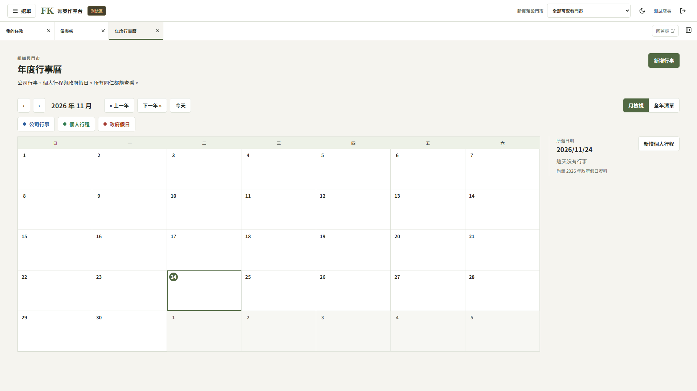
放在選單的「組織與門市」，所有同仁都能查看公司行事與政府假日。
跟舊版不同：上方可切換「月檢視」與「全年清單」兩種看法。
5盤點管理
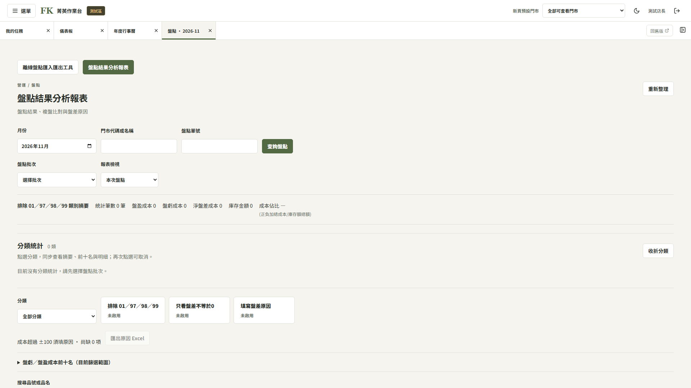
改在新版分頁內打開，可以查看盤點結果。
跟舊版不同：匯入、刪除盤點結果的權限已經分開，店長只能查看，盤點結果頁面上不會出現匯入、刪除盤點結果的按鈕。下載檔名的日期改成「2026-11-21」這種橫線寫法。
6診所自費藥毛利計算
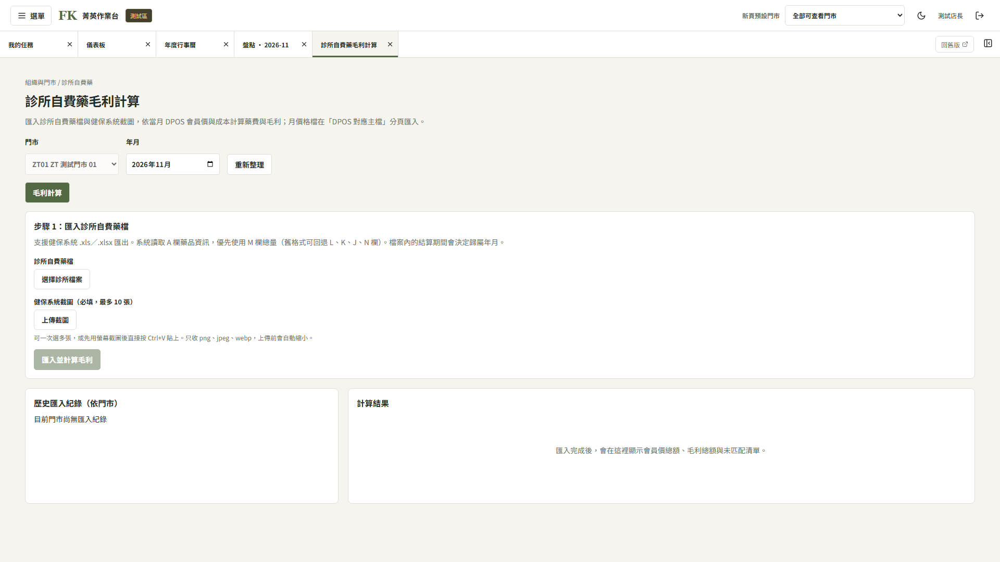
截圖可以先用螢幕截圖，再直接按 Ctrl+V 貼上，不必先存成檔案。
跟舊版不同：一次最多貼 10 張，上傳前會自動縮小。檔案月份和你選的月份不同、或同一診所同一個月重複匯入時，會先跳出確認視窗。選單只有真的能用的人才看得到這一項。
7關係會員
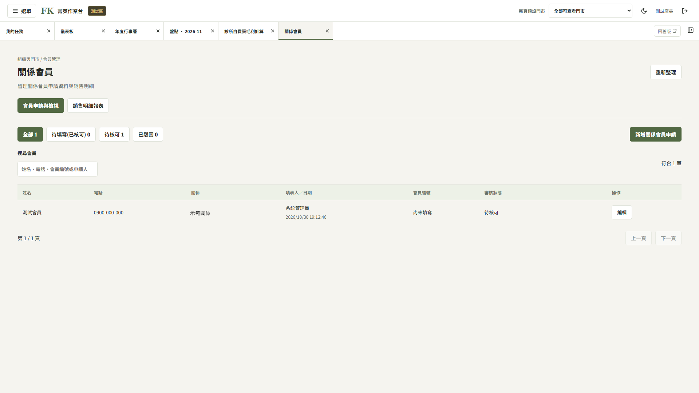
多了搜尋功能，可以用姓名、電話、會員編號、申請人來找，結果會分頁顯示。
跟舊版不同：每頁 50 筆。姓名與電話改回兩個欄位，順序跟舊版一樣。重複匯入同一份銷售明細時會自動略過。畫面上的姓名電話是測試用的假資料。
8每月人員狀態
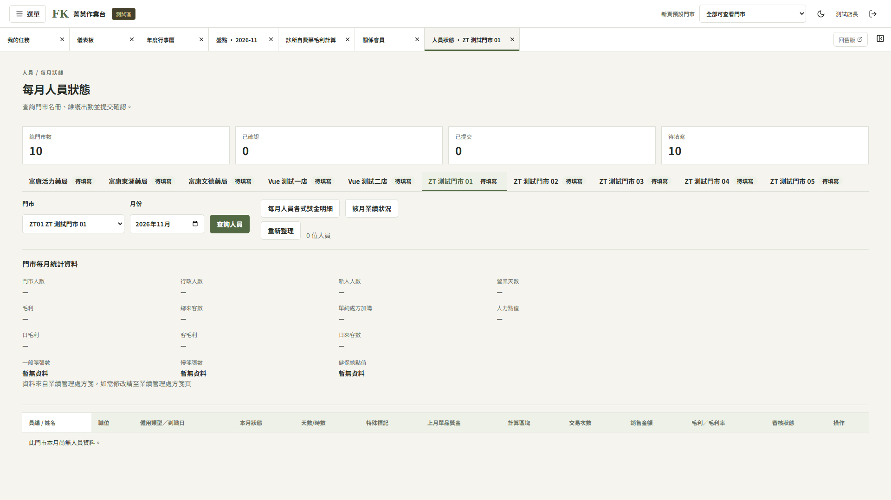
放在選單的「每月人員狀態」，上方各門市以頁籤切換。
跟舊版不同：可以直接看到已確認、已提交、待填寫各有幾家。
9待改善追蹤
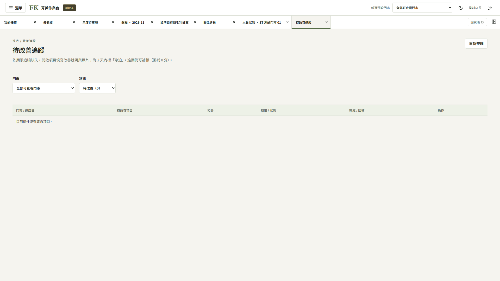
放在選單的「督導巡店」底下，可以依門市與狀態篩選。
跟舊版不同：逾期了仍然可以補報，不會被鎖住。
10總務服務中心首頁
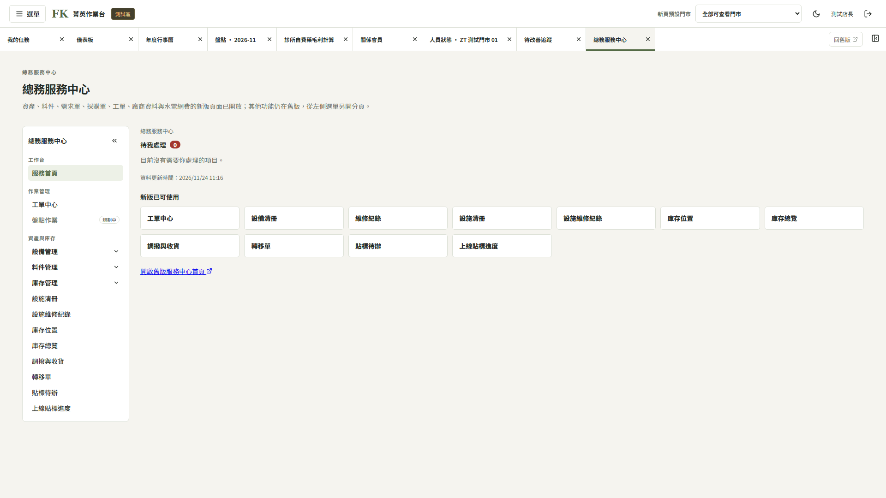
首頁左邊多了完整的功能清單，工單中心、設備清冊、庫存位置等新版頁面都能直接點進去。
跟舊版不同：選單上的數字徽章可以單獨點，點了只看待辦。還沒搬到新版的功能，保留「開啟舊版服務中心首頁」連結。
遇到問題怎麼辦
隨時可以回舊版
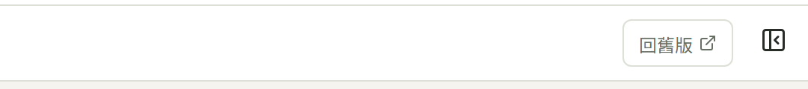
每個頁籤列的最右邊都有一個小小的「回舊版」。點下去會在另一個瀏覽器分頁打開舊版的同一個功能，你目前的新版畫面和還沒存的內容都還在，不會不見。
小提醒：如果你在明細頁按「回舊版」，會回到舊版的清單頁。
看到「此頁已由系統管理員暫時切回舊版」的通知？請直接點通知裡的連結，就會帶你到舊版繼續做事。
其他問題，請聯絡總部系統管理員。
常見問題
我找不到以前的功能在哪裡？
先按左上角「選單」，功能都在裡面。例如任務和儀表板在「派發任務」，行事曆在「組織與門市」，待改善追蹤在「督導巡店」。
我開了好幾頁，會不會搞混？
不會。每一頁都是一個獨立的頁籤，點上方頁籤就能切換，已經打開的內容不用重做。
按「回舊版」之後，新版這邊填的東西會不見嗎？
不會。舊版會在另一個瀏覽器分頁打開，新版畫面和沒存的內容都還留著。
盤點管理為什麼沒有匯入和刪除按鈕？
新版把「查看」和「匯入、刪除」的權限分開了，店長只能查看，所以盤點結果頁面不會出現匯入、刪除盤點結果的按鈕。需要匯入或刪除時，請聯絡總部系統管理員。
選單裡沒看到某個功能？
選單只會顯示你真的能用的功能，例如診所自費藥毛利計算。如果你覺得應該要有，請聯絡總部系統管理員。